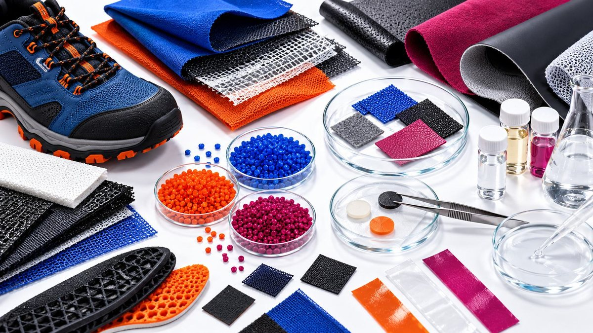

| 09 SETTEMBRE 2026 |
PFAS nei materiali tessili
e calzaturieri: perché
è il momento di agire
|
|

|
| I PFAS (sostanze perfluoroalchiliche e polifluoroalchiliche) sono impiegati da molti anni nei settori tessile, abbigliamento e calzatura per conferire proprietà come impermeabilità, idrorepellenza e resistenza alle macchie. Oggi queste sostanze sono al centro dell'attenzione delle autorità europee a causa della loro elevata persistenza nell'ambiente e della crescente pressione normativa verso una loro progressiva eliminazione. |
| La futura restrizione europea sui PFAS potrebbe avere un impatto rilevante su numerosi materiali e componenti utilizzati lungo tutta la filiera produttiva. Per molte aziende non si tratta più di chiedersi se il tema sarà rilevante, ma di capire quando e come prepararsi. |
| Dove possono essere presenti i PFAS? |
| I PFAS possono essere presenti in diverse applicazioni, tra cui: |
| tessuti tecnici; |
| membrane impermeabili e traspiranti; |
| pellami trattati; |
| materiali sintetici; |
| rivestimenti protettivi; |
| filati, accessori e componenti destinati a prodotti outdoor, sportivi o professionali. |
|
| In alcuni casi la loro presenza deriva da trattamenti applicati durante i processi produttivi e non è immediatamente evidente nel prodotto finito. |
| Perché è importante prepararsi ora |
| Oltre agli aspetti normativi, il mercato sta accelerando il cambiamento. Brand internazionali, distributori e consumatori richiedono sempre più frequentemente informazioni sulla composizione chimica dei prodotti e sulla presenza di sostanze considerate critiche. |
| La trasparenza della filiera sta diventando un fattore competitivo tanto importante quanto le prestazioni tecniche del prodotto. |
| Cosa dovrebbero iniziare a fare le aziende |
| Per questo motivo è consigliabile che le aziende inizino a: |
| identificare materiali e componenti potenzialmente interessati; |
| raccogliere informazioni aggiornate dai fornitori; |
| verificare la presenza di PFAS attraverso analisi e documentazione tecnica; |
| valutare eventuali alternative disponibili; |
| monitorare l'evoluzione del quadro normativo europeo. |
|
| Prepararsi oggi significa ridurre il rischio di future non conformità, evitare criticità nella gestione delle forniture e rispondere più rapidamente alle richieste dei clienti. |
| Sei pronto a verificare i tuoi materiali? |
| Analisi di laboratorio, verifica documentale e supporto tecnico consentono di individuare la presenza di PFAS nei materiali e nei componenti, valutando il livello di preparazione della filiera rispetto ai futuri requisiti normativi e alle richieste del mercato. |
|
Conoscere oggi ciò che è presente nei propri prodotti significa affrontare con maggiore sicurezza le sfide di domani.
|
|
|
|